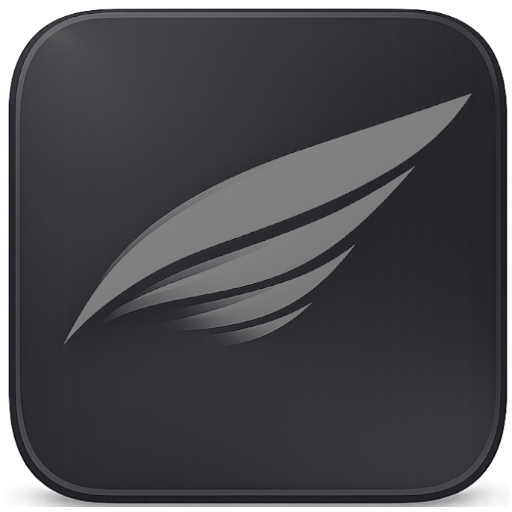

Легкий, быстрый и современный веб-браузер нового поколения. Ощути скорость, которая опережает время.
Узнать больше ↓Построен на оптимизированном движке Chromium. Запускается мгновенно, не нагружает оперативную память и бережет процессор.
Минимум отвлекающих деталей, красивое полупрозрачное оформление и плавные переходы. Полная эстетика на твоем рабочем столе.
Никакой скрытой телеметрии и фонового слежения. Твои данные принадлежат только тебе.